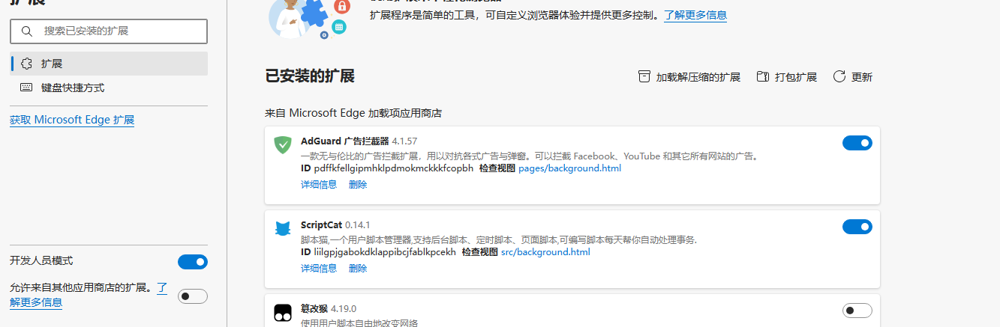
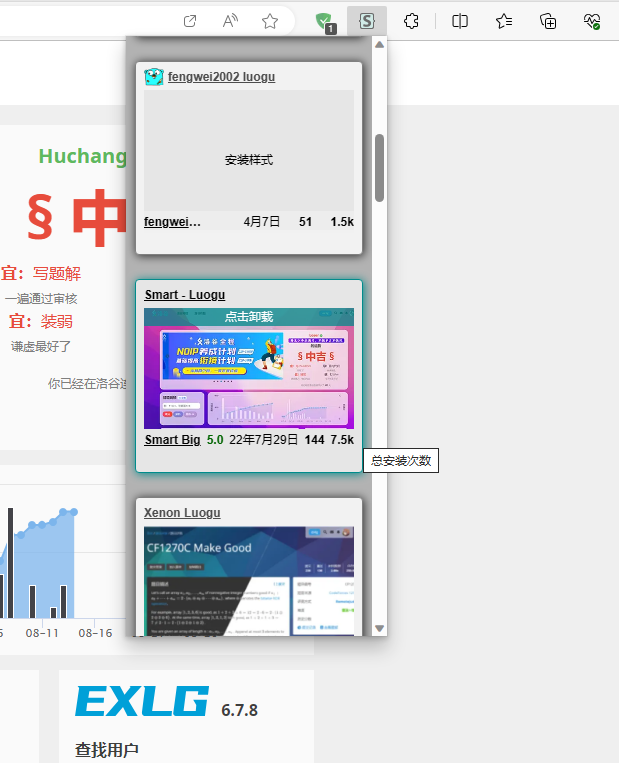

洛谷美化
2023-8
如何美化洛谷
下载附件链接(点我)密码 274lSmart - Luogu
把其中的stylus-master.zip解压为文件夹
如果是edge，就启动高级模式，再点击加载已经解压的插件，如图
谷歌基本相同
安装完后进入洛谷，点击插件，点击查找更多样式，如图
找到Smart - Luogu，点击后就安装了
exlg和超级搜索
将附件里的scriptCat.rar和插件.rar解压
这里有两种方法
可以在浏览器自带的插件库里找到插件猫或者油猴（篡改猴）安装
也可以用scriptCat.rar（同上面Smart - Luogu安装）
然后将插件.rar解压出的js文件拖到浏览器里，要一个一个拖，再点击安装就行了，也可以将js文件
用记事本打开，复制里面的内容到插件里就行了
如果后面提示exlg访问某某域名，点始终允许